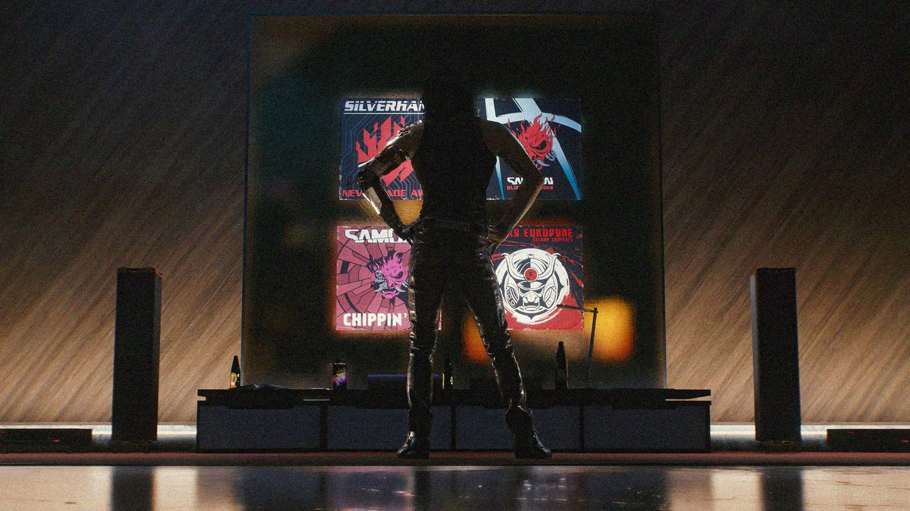
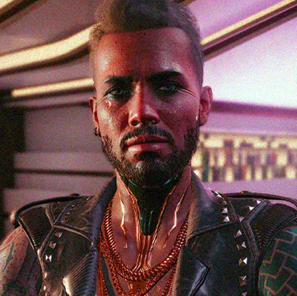
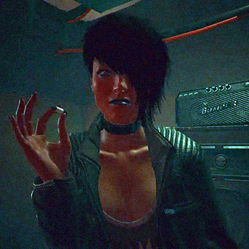
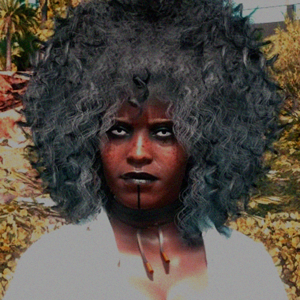

Samurai es una banda del tipo Chrome Rock inicialmente activa desde 2003 hasta 2008. Como muchas otras bandas, Samurai comenzó como un grupo callejero que tocaba en varios clubes y bares en Night City hasta que el director de Universal Music les ofreció un contrato. Tras esto, el grupo tuvo un gran éxito, con giras y álbumes. El grupo se disolvió permanentemente en 2023 cuando Johnny Silverhand y un equipo que incluía a Rogue y Morgan Blackhand atacaron la Torre Arasaka tras la conclusión de la Cuarta Guerra Corporativa. Es conocido que Adam Smasher disparó a Johnny, y su cuerpo nunca fue encontrado después de la explosión de la bomba atómica dentro de la torre...
la banda

Johnny Silverhand
para

John Doe
Architect & Engineer

John Doe
Architect & Engineer

John Doe
Architect & Engineer